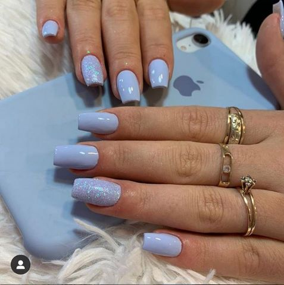
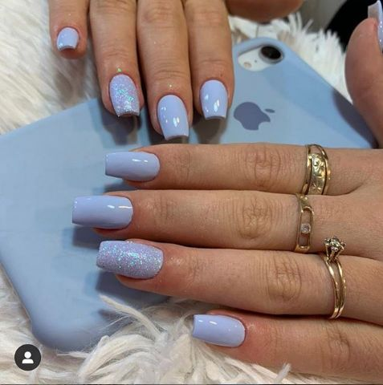
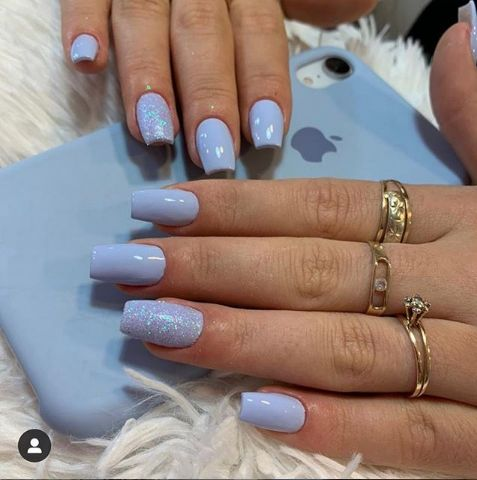

Unhas Lindas com Alongamento em Gel
 



Olá, sou [Seu Nome] e sou apaixonada por alongamento em gel! Ofereço um serviço profissional e personalizado para que você tenha unhas lindas e duradouras.
Com [sua experiência], utilizo as melhores técnicas e produtos para garantir resultados impecáveis e satisfatórios.
Acredito que unhas bem cuidadas são um acessório que eleva a autoestima e a autoconfiança da mulher.
O alongamento em gel é uma técnica que utiliza gel UV ou LED para criar unhas artificiais sobre as unhas naturais. O gel é aplicado com um molde ou tip, esculpindo a unha no formato desejado.
O resultado é um visual natural e resistente, que dura por várias semanas.
Para manter suas unhas de gel sempre bonitas e saudáveis, é importante realizar a manutenção a cada 20 a 30 dias.
Na manutenção, o gel é reaplicado, corrigem-se crescimentos e imperfeições, e você pode escolher uma nova cor ou design.
Com os cuidados corretos, suas unhas de gel podem durar até 3 meses ou mais.

Para agendar seu horário, selecione o dia e horário desejados no calendário abaixo. Em seguida, você será direcionada para o WhatsApp para finalizar o agendamento.
Para mais informações ou dúvidas, entre em contato comigo: